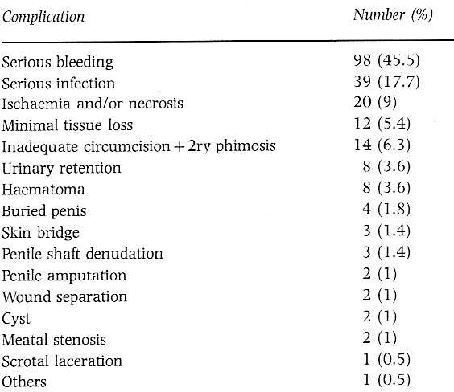
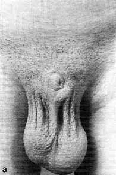
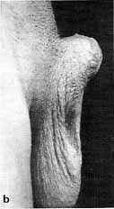
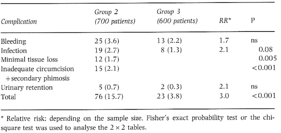

THE CIRCUMCISION REFERENCE LIBRARY
|
Objectives To present the most serious complications from circumcision and to compare the complications caused during mass and single circumcisions per- formed by medically trained or untrained operators. Patients and Methods The study comprised both a retro- spective and prospective analysis of 220 cases of complications from circumcisions occurring during the last decade and a comparison of the frequency and distribution of complications in mass (n=700) and single (n=600) circumcisions. Results Traditional (medically untrained) circumcisers were responsible for 85% of the complications and almost |
all the disastrous ones. The frequency of complications from mass circumcisions was statistically significantly higher than that from circumcisions performed singly in operating room conditions (relative ratio 3.05 and P<0.001). Conclusion Circumcision can have serious life- threatening and prolonged complications. It should only be performed in medical institutions by suitably trained surgeons. Mass circumcisions organized for any purpose carry significant risk and should be prevented. Keywords Circumcision complications, traditional, medical, ritual circumcision. |
Introduction
Circumcision, the oldest and most prevalent surgical procedure in boys, is performed throughout the world for ritual, traditional or medical reasons. It is not so simple that It can be performed by anyone devoid of appropriate medical training [1-7]. Most Turkish boys are circumcised at some time from the eighth day after birth to the age of puberty. Children with penile malformations. e.g. hypospadias, epispadias or medical contraindications, are not circumcised; if more than half of the glans can be clearly seen, the child is accepted as having been born with a circumcision and circumcision or traditional blood-letting are forbidden is not performed unless the prepuce covers more than half the glans. Female circumcision is not performed among Turkish tribes [1].
The focus of this investigation was to evaluate the status of circumcision in Turkey (where the prevalence of circumcision reaches 99%) and to compare the most serious complications between circumcisions performed within and outside medical institutions. The latter were also analysed to compare mass and single circumcisions.
Patients and methods
Group 1
During the last decade, 220 cases with complications from circumcision attended through emergency or outpatient departments at our hospital. Those patients with minimal bleeding that stopped immediately on compression and those with minor penile infection and no systemic symptoms who were cured by topical antibiotic administration were excluded. Patients requiring oral or parenteral antibiotic administration were included. Analyses were performed retrospectively for the first 6 years and prospectively for the last 4.
Group 2
A mass circumcision was organized in our hospital whereby, 700 children were circumcised during a 5-day period; all the boys were registered and examined in the hospital. After local preparation with antiseptic solution and adequate draping and dressing, a penile anaesthetic block was applied using lidocaine. After 3-5 min. the circumcision was performed, with the help of a nurse. using a traditional clamping technique. The prepuce was gently retracted over the glans and detached until the coronal sulcus was apparent and if present, any smegma was removed. The coronal sulcus was marked over the prepucial skin and grasped by two mosquito clamps from the frenulum and opposite to it, and pulled distally without tension. By using a slightly larger straight clamp, the prepuce was grasped from the previous mark in the angle of coronal sulcus while pushing the glans proximally. Care was taken to avoid grasping the glans and frenulum during this procedure; the prepuce distal to the clamp was then cut using a scalpel. After providing sufficient haemostasis with 410 plain catgut, the edges of the skin and mucosa were sutured with 5/0 chromic catgut. The wound was closed with an overlying sponge containing antibiotic cream. The mean operative duration was 10 min. Paracetamol was used for analgesia in the first few days. After observation for 30 min the children were returned to their parents. The dressings were removed after 72 h and the first followup examination carried out. If forceful retraction was required, patients were prescribed a neutral ointment to prevent glanular desiccation. A second follow-up examination was made a week later and the last after 3 months.
Group 3Six hundred male children circumcised in the operating theatre during the last decade were evaluated for complications. The analyses were retrospective for the first 6 years and prospective for the last 4 years. The indications for surgery were mainly phimosis and rarely paraphimosis. Ritual circumcision is not performed routinely in hospitals in Turkey. The clamp technique described above was preferred routinely although the sleeve resection technique was occasionally used for educational purposes. The latter provides better cosmetic results and is safer because the glans can be seen completely during procedure, but it takes longer to perform.
Results
Group 1
The frequency distribution of complications is given in Table 1. The bleeding was mild in 48 cases (49%), moderate in 40 (40%) and profuse in 10 (10%). Two children with profuse bleeding circumcised by the same non-medical professional required blood transfusion and one of them, a 2-year-old, died. All of the cases with secondary phimosis were caused by inadequate circumcision and fibrosis, and were re-circumcised. Cysts were caused by silk sutures placed for haemostasis and were excised. Examples of severe complication are shown in Figs 1 and 2.
|
Table 1 complications of circumcision in group 1
(220 patients)  |
Group 2
The frequency distribution of complications is given in Table 2. At the pre-operative examination, five children with hypospadias, three with undescended testes, one with an inguinal hernia and three with hydrocele were not circumcised. Another 15-year-old boy with acute urethral discharge was not circumcised and appropriate therapy was prescribed. Most of the boys in this group was from either the frenulum or dorsally; sutures were needed in three cases and the others stopped bleeding with simple compression. Minimal tissue loss s were mostly from the glans, frenulum or penile skin d conservative therapy succeeded in all cases.
|   |
Fig. 2. The appearance of two patients with severe penile amputations, before reconstruction. They were twins and had been circumcised when 2.5 years old by the same circumciser (a traditional drummer). When 19 years of age they applied for reconstructive surgery. In one (a) the glans penis and corpus cavernosum could not be seen and the external urethral meatus was level with the mons pubis. On examination. the glans penis was absent and the cavernosal bodies were only 4cm long. Ln the other twin (b), the penis was 1.5cm above skin level and there were losses from both the glans penis and cavernosal bodies. accompanied by iatrogenic hypospadias. Both patients were reconstructed successfully. |
Group 3
The frequency distribution of complications is given in Table 2. Bleeding was mostly simple oozing and occurred within 24 h. All infections were noticed 3 days after the circumcision. The frequency of complications from circumcision was statistically significantly greater than that from circumcisions performed in operating room conditions (relative risk 3.05, P<0.001).
Discussion
Unfortunately, most circumcisions throughout the world are performed by traditional circumcisers rather than by medically-trained professionals. In those patients with complications, only 5% of the circumcisions were performed by doctors, 10% by health technicians and the remaining 85% by traditional circumcisers. The traditional circumcisers in Turkey are commonly devoid of any medical training and belong to other professions such as barbers, traditional drummers and male servants of health institutions. They usually perform circumcision with self-made devices similar to the Mogen clamp.
The present analysis emphasizes that the most serious complications are caused by traditional circumcisers this potentially dangerous traditional practice should be prevented. Furthermore, mass circumcisions become widespread and used by many sociopolitical relief organizations in Turkey as a method of advertisement. The present results suggest that even when performed at medical institutions, it is difficult to; provide enough sterile equipment and conditions for a safe mass circumcision. Moreover, mass circumcisions performed outside medical institutions are also becoming widespread and are mostly performed by health technicians or traditional circumcisers.
In conclusion, circumcision is an important surgical procedure which has life-long effects and should be performed singly at medical institutions by trained medical staff. Mass circumcisions commonly organized for self-advertisement or for propaganda cause significant risk and should be stopped as soon as possible.
| Table 2 Comparison of
complications of mass circumcision (group 2) with those
from single circumcisions (group 3)  |
Acknowledgements
The author acknowledges M. Cetinkaya and S. Beyribey for their contribution to this study.
References
Author
Dr E. Özdemir, MD, PhD, Assistant Professor, Department of Urology. Faculty of Medicine, Kyoto University, 54 Kawahara-cho, Shogoin. Sakyo-ku. Kyoto 606-01, Japan.
CIRP Note: This information may also be found at: http://www.blackwell-synergy.com/doi/abs/10.1046/j.1464-410X.1997.00218.x
http://www.cirp.org/library/complications/ozdemir/